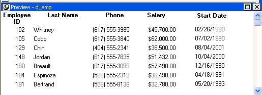

You can use display formats to customize the display of column data in a DataWindow object. Display formats are masks in which certain characters have special significance. For example, you can display currency values preceded by a dollar sign, show dates with month names spelled out, and use a special color for negative numbers. PowerBuilder comes with many predefined display formats. You can use them as is or define your own.
Here the Phone, Salary, and Start Date columns use display formats so the data is easier to interpret:

 Display formats not used for data entry When users tab to a column containing a display format, PowerBuilder removes
the display format and displays the raw value for users to
edit.
Display formats not used for data entry When users tab to a column containing a display format, PowerBuilder removes
the display format and displays the raw value for users to
edit.